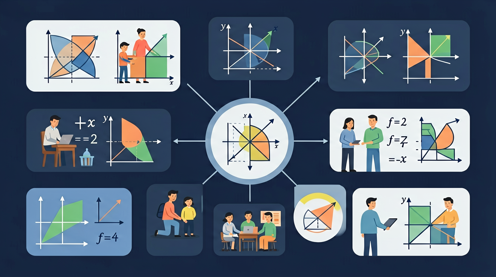

理解分式的本质，掌握分式的化简与四则运算，攻克代数运算难关

❓ 为什么分式要有分母不为零的限制？
❓ 分式和分数到底有什么区别？
❓ 约分时为什么不能直接划掉字母？
学完这一课，这些问题你都能自信地回答。
🎯 能判断分式有意义的条件
🎯 能计算分式与整式的混合运算
🎯 能分析分式约分中的常见错误
这几道题帮你了解自己的分式基础～
用 x 升水平均分给 (x+3) 人，每人得 x/(x+3) 升。当 x=-3 时，分母为0，就没法分了！这就是为什么要限制分母不为0。
约分 (x²-4)/(x²-x-2)
错误：(x²+4)/(x+4) = x （直接消去4）
正确：分子 x²+4 和分母 x+4 无公因式，无法约分！
只有公因式（乘积关系）才能约分，加减关系的项不能消！
分式运算与分数完全类似：1/2 + 1/3 = 3/6 + 2/6 = 5/6。把数字换成代数式，道理不变！先通分，再运算。
| 运算 | 规则 | 示例 |
|---|---|---|
| 乘法 | 分子×分子，分母×分母 | (a/b)×(c/d) = ac/bd |
| 除法 | 乘以倒数 | (a/b)÷(c/d) = (a/b)×(d/c) = ad/bc |
| 同分母加减 | 分母不变，分子加减 | a/c ± b/c = (a±b)/c |
| 异分母加减 | 先通分，再加减 | 1/(x+1) + 1/(x-1) → 通分 |
计算：1/(x+1) - 1/(x-1)
计算：(x²-1)/(x+2) ÷ (x-1)/(x²-4)
错误：1/x + 1/y = 2/(x+y)
正确：1/x + 1/y = y/(xy) + x/(xy) = (x+y)/(xy)
分母相加≠新分母！必须通分！
解分式方程时，我们"去分母"——但如果某个解让分母=0，那它其实不合法！这样的"假解"叫增根，必须舍去。
解：1/(x-1) + 2 = 3/(x-1)
解：x/(x-2) = 2/(x-2) + 1
一项工程，甲单独完成需 x 天，乙单独完成需 (x+5) 天。两人合作4天完成工程的3/4。求 x。
先独立作答，再点选项查看对错与错因。
绿化带改造后，新面积与原面积的比值表示为分式时，正确的是
当x=4时，该分式的值为
下列哪个x的取值会使该分式无意义？
将分式(x+5)(x-1)/x(x+3)化简为最简形式____
答案：(x²+4x-5)/(x²+3x)
分子展开后为x²+5x-x-5，分母为x²+3x
若分式值为1，则x的值为____
答案：5
解方程(x+5)(x-1)=x(x+3)得x=5
关于分式(x²-9)/(x-3)，说法正确的是
分析x取不同正整数时面积比的变化规律
分式=分子÷分母，本质是除法运算
分母≠0如同除数≠0，保证运算有意义
分式与分数运算规则相似，但含字母变量
绿化带面积=长(分式)×宽(分式)
工程问题中，工作效率=工作量/时间(分式模型)
✅ 应先分解因式确认公因式
💡 混淆代数约分与数字约分
✅ 解分式方程必须验根
💡 未建立定义域意识
口诀：分母为零无意义，约分先看公因式
类比：分式像披萨：分母是总份数，不能为零份
分式(x+2)/(x-3)有意义的条件是？
分式3a/6b约分结果是？
(中考题)若分式(x²-4)/(x-2)的值为0，则x=？
绿化带长(3x+6)/(x+2)m，宽(x²-4)/(2x-4)m，其面积为？
甲完成工程需(2a+4)小时，乙需(a²-4)小时，甲乙效率比是？
And：学生已掌握分数的基本概念
But：但面对复杂表达式时容易混淆运算顺序
Therefore：本模块帮助学生理清分数运算的优先级
分数表达式是由分数和运算符号组成的式子。计算时要遵循先乘除后加减的顺序。例如：计算 1/2 + 3/4 × 2/3 时，先算乘法部分 3/4 × 2/3 = 6/12 = 1/2，再加上 1/2，最终结果是1。
🌍 就像做蛋糕时，要先混合面粉和糖（乘法），再加鸡蛋（加法），顺序错了会影响成品。
计算：2/3 - 1/4 × 4/5
And：学生会基础分数运算
But：遇到括号时不确定何时需要改变符号
Therefore：掌握括号对分数表达式的影响
括号会改变运算顺序，分数前的负号要特别注意。例如：(1/2 - 1/3) × 2 = (3/6 - 2/6) × 2 = 1/6 × 2 = 1/3。如果括号前有负号，如 -(1/2 + 1/4) = -3/4，相当于给括号内每一项变号。
🌍 就像超市满减活动，括号就像优惠组合，负号就像'不参与活动'的标签。
计算：-(2/5 + 1/10) ÷ 1/2
And：学生能计算两步分数运算
But：面对多层分数嵌套时无从下手
Therefore：学会用倒数法简化复杂分数
连分数是指分子或分母仍是分数的表达式。化简时要找到主分数线，把除号变乘号并取倒数。例如：(1/2)/(3/4) = 1/2 × 4/3 = 2/3。再复杂的如 [(1+1/2)/3]/(1/4) 可以分层计算。
🌍 就像俄罗斯套娃，要一层层打开，最大的套娃（主分数线）决定打开顺序。
化简：(2/3)/(4/9)
And：学生已掌握分数计算技巧
But：遇到实际问题时不会建立表达式
Therefore：培养将生活问题转化为分数模型的能力
应用题的关键是找出'整体1'。例如：小明喝掉水的1/3，又倒入200ml后水量是原来的5/6。设原水量为x，建立方程：(1-1/3)x + 200 = 5/6x，解得x=1200ml。注意单位要统一。
🌍 就像给手机充电，消耗的电量（分数）和充电量（具体数值）要一起考虑。
一本书第一天读1/4，第二天读剩下的1/3，还剩多少？
💡 用分数等价理解分式约分。
外链：https://phet.colorado.edu/sims/html/fraction-matcher/latest/fraction-matcher_zh_CN.html
开放任务：用三步写出你如何向同学讲清「分式」。